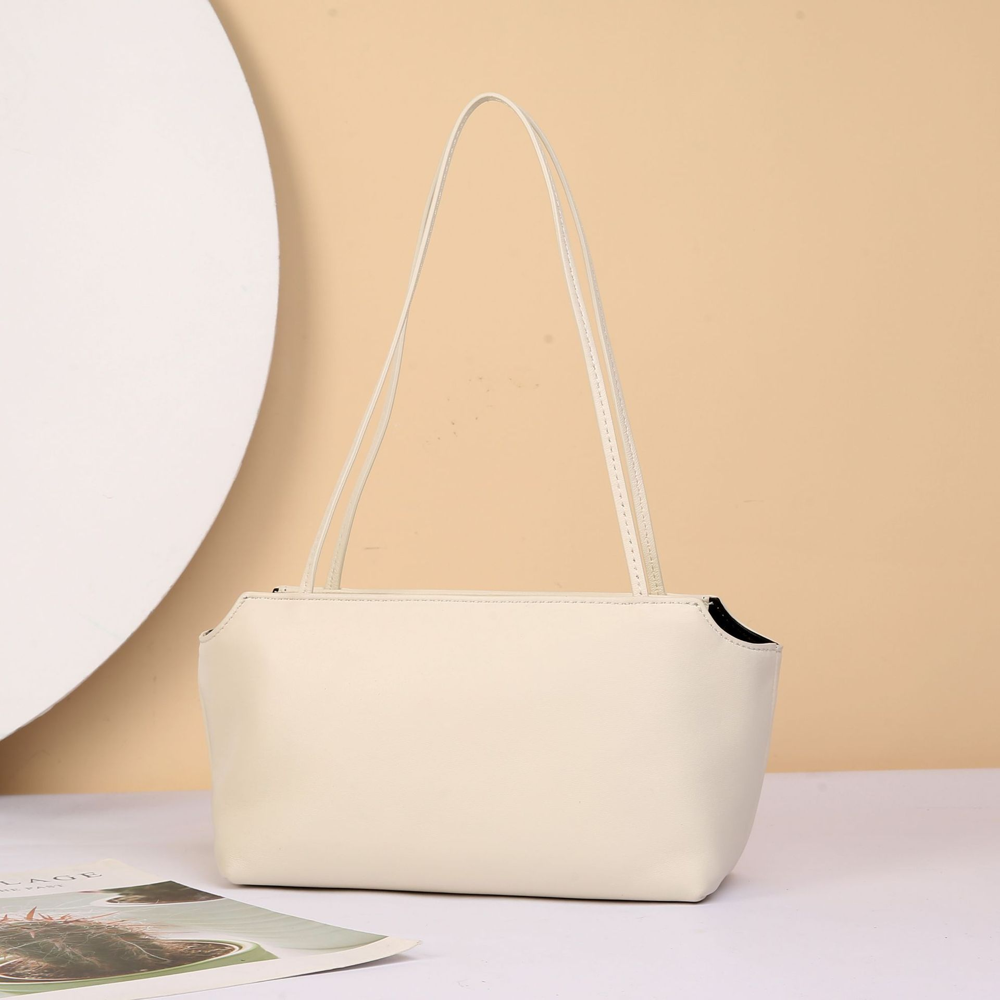

Original CJ photoBag 01 · CJNS3126023
Slim shoulder bag
$20.49 supplier price
Clean compact shape and low quoted shipping. Supplier description mentions several leather finishes; confirm the exact selected SKU is sheepskin.
Supplier material claim: Sheepskin, supplier claim
Quoted variant: Black. Main catalog photo may show another color.
| Destination | Postage | Product + postage |
|---|---|---|
| US | $7.30 | $27.79 |
| UK | $4.80 | $25.29 |
Shipping, inventory & source details
US: LuWei Ordinary US · transit estimate 5-11
UK: YunExpress Ordinary · transit estimate 4-7
Selected variant, China: 0 CJ warehouse units; 9,799 supplier/factory units reported. Supplier stock is not physically verified by this review.
Product ID: 2609040510041633300
Variant SKU: CJNS312602301AZ
All 5 source variants retained in research. Only the variant named above was freight-checked.